Viva la Vita Vida
Who are we?

- Four active members: Davee, Proxima, xyz, and yifanlu
- First group to hack PSP mode, Vita mode, and ARM TrustZone
- Released first jailbreak in 2016 (>700K users), untethered jailbreak in 2017 (>270K downloads)
- Helped create open SDK and document Vita internals
Overview
Software
- Security architecture
- Hardware architecture
- Hacking it
Hardware
- Glitching
- PCB layout
- Automating attacks
Software Hacking
Security Architecture


F00D
F00D Kernel
Content keys protect secure assets such as games and firmware data.
F00D Loader
Meta keys protect the content keys and allows revoking compromised content keys.
How to attack?
We need more information:
- Hardware architecture
- Software Design and Implementation
After we can examine attack surface.
Hardware Architecture
A quick Google search...
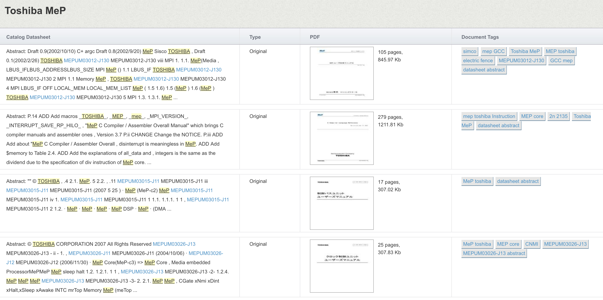Thanks GPLv3!
We built an IDA plugin...
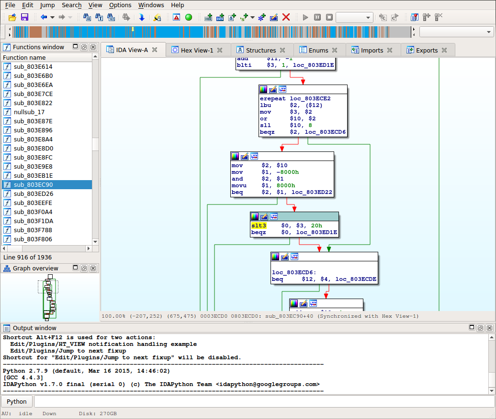an emulator...
and even a "decompiler"!
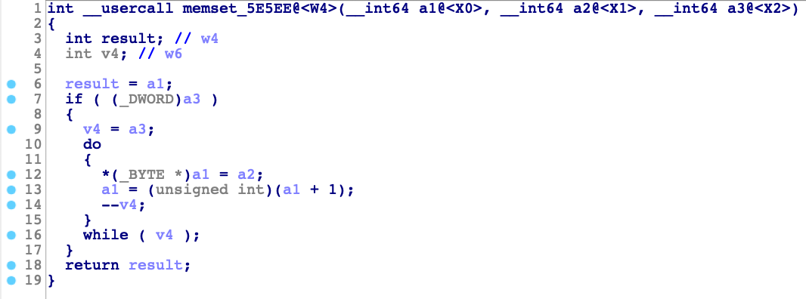What we learned
- Instruction set inspired by MIPS
- No virtual memory or memory protection
- Not hardened for security!
F00D Software
Applets
- Loaded only when required
- Can only have a single applet loaded
- RPC interface to interact
- Applets are (of course) signed and encrypted
Applet loading
Applet loading
Applet loading
Applet loading
Applet loading
Applet RPC
Applet RPC
Applet RPC
Applet RPC
Applet unloading
Applet unloading
Applet unloading
Examining our attack surface
Opportunities(need better name)
- We control all input into F00D
- Documentation on memory regions
- Can attack Applet lifecycle
- Can also attack RPC calls within applets
Hazards
- Signed Executables
- Encrypted executables
- Effectively a black box
Ideally we want to read F00D SRAM to enable a targeted attack.
Applet loading
Applet loading
ARM -> F00D
ARM operates with virtual memory whilst F00D does not.
Virtual memory is not guaranteed to be backed by continious physical memory.
Copying every memory transaction to continious physical memory would be expensive.
There needs to be a better way.
A Fatal Flaw
F00D kernel does not blacklist its own SRAM!
Data is copied to its internal memory still, so no leak.
Data is still signature checked, so this is useless.
Or is it?
What if the chunk of memory in SRAM matches the original?
Signature check succeeds and we continue as normal.
Additionally, we learn the contents of that part of SRAM.

CTF get
— nowhere everywhere (@pomfpomfpomf3) February 18, 2017
"Congratulation! At last you get the plaintext of the PS Vita Secure Kernel!"
Hardware Hacking
What is Glitching?
- Introducing a software bug through hardware faults
- Many ways of doing so (voltage, reset, EMI, etc)
- Focus on voltage glitching: easiest to do
Example Target Code
if (*size < 256) {
return process_data(*size);
} else {
return 0;
}
Compiles to...
lw $1, ($0)
sltu3 $0, $1, 0x100
beqz $0, .error
bsr process_data
.error:
ret
| $0 0x00810000 |
$1 0x00000000 |
$pc 0x00800100 |
Running it...
lw $1, ($0)
sltu3 $0, $1, 0x100
beqz $0, .error
bsr process_data
.error:
ret
| $0 0x00810000 |
$1 0x00004000 |
$pc 0x00800102 |
Running it...
lw $1, ($0)
sltu3 $0, $1, 0x100
beqz $0, .error
bsr process_data
.error:
ret
| $0 0x00000000 |
$1 0x00004000 |
$pc 0x00800104 |
Running it...
lw $1, ($0)
sltu3 $0, $1, 0x100
beqz $0, .error
bsr process_data
.error:
ret
| $0 0x00000000 |
$1 0x00004000 |
$pc 0x00800108 |
With a glitch...
lw $1, ($0)
sltu3 $0, $1, 0x100
beqz $0, .error
bsr process_data
.error:
ret
| $0 0x00810000 |
$1 0x00000000 |
$pc 0x00800100 |
Glitch Here!
lw $1, ($0)
sltu3 $0, $1, 0x100
beqz $0, .error
bsr process_data
.error:
ret
| $0 0x00810000 |
$1 0x00004000 |
$pc 0x00800102 |
$0 is incorrect
lw $1, ($0)
sltu3 $0, $1, 0x100
beqz $0, .error
bsr process_data
.error:
ret
| $0 0x00000001 |
$1 0x00004000 |
$pc 0x00800104 |
Bypassed check
lw $1, ($0)
sltu3 $0, $1, 0x100
beqz $0, .error
bsr process_data
.error:
ret
| $0 0x00000000 |
$1 0x00004000 |
$pc 0x00801000 |
Why does it work though?
- Processor state can be corrupted
- But how does voltage glitches cause this?
- We need to look at transistors
- ... and logic gates
NAND Logic
C = ~(A & B)
| A | B | C |
| 0 | 0 | 1 |
| 0 | 1 | 0 |
| 1 | 0 | 0 |
| 1 | 1 | 0 |
CMOS in 5 minutes
A = 0, B = 0

A = 1, B = 0

A = 1, B = 1

Now a glitch...
A = 1, B = 0
A = 1, B = 0

A = 1, B = 0: Output Incorrect!

A = 1, B = 0: Restored
Propagating the error
- We caused one NAND gate to have incorrect output
- but only for a small amount of time!
- If we short for too long, system shuts off
- But the error can propagate
Takeaway
- Voltage glitching can cause incorrect gate outputs
- But only for a short time!
- The incorrect output has to propagate
- Lots of opportunities for system to "correct" itself
- Ideal: one error causes a lot of gate changes
- Example: arithmetic operations, AES hardware, etc
Roadmap
- Where to attack
- What to attack
- Automate until success
Where is the power source?
- Modern chips have dozens of voltage rails
- One power source is connected to the processor's transistors
- Each rail is connected to dozens of pins
- The chip has 724 pins!
- ... but heuristics can help us narrow down the search
PCB Cartography

Remove solder mask

Pick random pin from center

Layer 2

Layer 3

Layer 4

Layer 5

Layer 6: trace ends!

Find border of copper

Find all vias

Let's trace backwards

Layer 4

Layer 3

Find copper pads

Layer 2

Find all vias

Layer 1

We found 35 power pins!

- 689/724 to go!
- 245 are not connected: no signal from Layer 1 to 2
- 175 are to ground in Layer 1 or 2
- So only 269 pins left! Daunting, but doable in an afternoon.

Last hurdle: which is the right voltage rail?
Write some simple counter incrementing code
repeat 10000000,end
add $0, 1
add $1, 1
add $2, 1
add $3, 1
add $4, 1
add $0, 1
add $1, 1
add $2, 1
end: add $3, 1
add $4, 1Try glitching on each voltage rail...

until the counter is corrupted

What to attack?
We can now inject logical bugs but how do we exploit it to run code?
Bypass signature check? Don't have decrypted samples, hard to guess how signature is parsed
Easier target: boot partition header, which locates the bootloaders
Unencrypted, unsigned, easy to understand
Look at partition header's size field
Size field is checked to be < 0xDE blocks.
If check passes, bootloader is read for that many blocks.
Otherwise, it halts.
Plan of Action
- Sniff Vita <-> external storage traffic
- MOSFET (switch) connecting the voltage rail we found to GND
- MOSFET controlled by FPGA, cuts off power for a short time to create glitch

Putting it together...
ChipWhisperer
- Open source hardware hacking platform
- Scriptable in Python for automation
- FPGA for control
- MOSFET for glitching
- Added: Custom trigger pattern for storage traffic
psvemmc
- Custom design
- Solder all wires from Vita to one board
- Switch for storage dumper/flasher mode and glitch target mode
- Glitch target mode connects to ChipWhisperer's 20-pin port
d14585f6defa18fa
8222e683bb8b53ee
aa5bbe7c22f8d513
633d5e1701d8858f

Conclusions
Sony had a history of crypto failures...
- PSP: 1.00 had no code signing checks
- PS3: ECDSA reused "random" data, private keys factored
- PS Classic: updater private keys accidentally included on all shipped devices
Vita is Sony's best security work to date.
- Secure boot is simple and has a tiny attack surface.
- Dedicated crypto processor keeps threat model simple.
- Modern exploit mitigation implemented on the application processor.
BUT...
There is a slight issue in their choice of bootloader decryption key
Which protects every. single. content. key. in. the. system.
It is just a single byte repeating...
We brute forced it before the glitch attack
But for legal reasons, we cannot share it with you
So here is an unrelated picture of a random Amazon search

Resources
- HENkaku Wiki: reverse engineering Vita
- Github: Crypto tools, CW fork, etc
- VitaSDK: open Vita toolchain